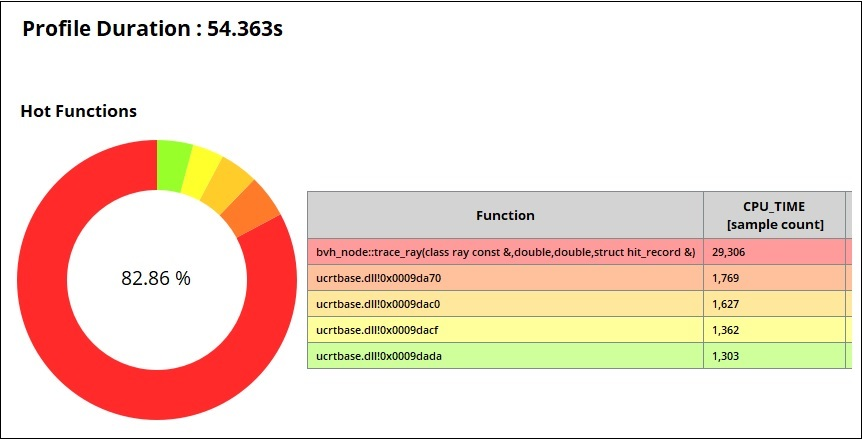
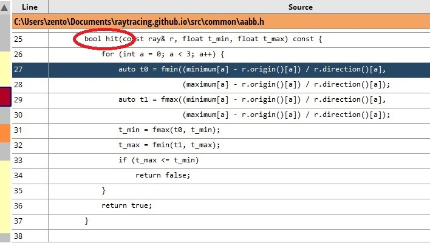

**เมื่อความแค้นและ SIMD(ซิมดี) ทำให้ Binary Tree คุณเร็วขึ้น**
2022-07-04
ผมคิดว่าการทำออพติไมซ์หรือการทำให้โปรแกรมเร็วขึ้นควรเป็นทักษะที่ไม่ว่าใครก็ควรมีติดตัวไว้
เพราะหลายๆครั้งโปรแกรมเราช้าแม้ว่าจะมีโครงสร้างข้อมูลสุดบรรเจิดกับอัลกอริทึมสุดล้ำใส่ลงไปแล้ว
และจุดที่หลายๆโปรแกรมช้ากลับเป็นอะไรง่ายๆอย่างการบวกลบคูณหาร
ถ้าเราต้องคำนวนข้อมูลเยอะๆในแบบเดียวกัน เทคนิคที่ชื่อ SIMD (อ่านว่าซิมดี) อาจจะทำให้โปรแกรมเราแรงขึ้นได้ถึง 4 - 16 เท่า
เป็นเทคนิคค่อนข้างมาตรฐานที่คนทำแอพพลิเคชั่น real-time เพื่อนผมทุกคนรู้จัก
เพื่อนที่ทำงานผมทุกคนพูดคำว่า SIMD บ่อยกว่าคำว่า "ข้าวผัดกะเพรา" ซะอีก
SIMD มีในแทบทุกแพลตฟอร์มที่คุณใช้ไม่ว่าคุณจะใช้ [C++](https://www.intel.com/content/www/us/en/docs/intrinsics-guide/index.html),
[C#](https://docs.microsoft.com/en-us/dotnet/standard/simd),
[Unreal Engine](https://www.intel.com/content/www/us/en/docs/intrinsics-guide/index.html),
[Unity](https://docs.unity3d.com/Packages/com.unity.burst@1.4/manual/docs/CSharpLanguageSupport_BurstIntrinsics.html),
[เขียนเว็บ](https://www.infoq.com/articles/webassembly-simd-multithreading-performance-gains/),
ฯลฯ
มีบนแทบทุกฮาร์ดแวร์ AMD Ryzen, Intel iSomething, Arm (Neon) ย้อนกลับไปถึงเครื่อง PS2
และที่สำคัญโปรแกรมคุณใช้ไฟเท่าเดิมไม่ร้อนขึ้น
SIMD จึงเป็นอาวุธเทพที่คุณควรมีติดตัวไว้ไม่ว่าจะเดินทางไปแพลตฟอร์มไหนก็ตาม
เราก็มาเข้าเรื่องกันเลยดีกว่า
ความแค้นคือแรงขับเคลื่อนที่ดีที่สุด
===

สำหรับพวกคุณแล้ว binary tree คืออะไร
พวกคุณอาจจะมองมันเป็นเพียง data structure เร็ว O(log(n)) ตอนเสิร์ชข้อมูลที่ไม่มีความสำคัญอะไร
สำหรับผม binary tree คือสัญลักษณ์ของความแค้น
ตอนที่ผมเรียนปริญญาโทอยู่นั้น ผมมีโอกาสเทคคอร์สที่เกี่ยวกับการเรนเดอร์ภาพเสมือนจริงด้วยคอมพิวเตอร์
เป็นคอร์สที่เราเขียนโปรแกรมทุกอย่างเอง
ในคอร์สอาจารย์เลยบอกว่าให้นักเรียนไปเขียน renderer กันมาด้วยตัวเองเป็นการบ้านย่อยอันนึง
แต่สิ่งที่ผมไม่รู้ในตอนนั้นคือ อาจารย์จะเอาประสิทธิภาพมาวัดกันด้วย
แน่นอนว่าด้วยความที่ผมเป็นเด็กดีตั้งใจทำการบ้าน
ทำให้ผมสามารถเอาชนะเด็กสามสิบกว่าคนในห้องรวมทั้งอาจารย์ผมได้อย่างไม่ยากนัก
แต่มีคนนึงที่ผมไม่สามารถชนะได้คือ อิมานิชิ
ช่วงแรกๆผมก็คิดแค่ว่ามันเป็นแค่การบ้านเพียงอันหนึ่งเท่านั้น
เราไม่ควรจะไปใส่ใจอะไรมาก
นับจากวันนั้นถึงวันนี้ก็เป็นเวลาหกปี
แม้ว่าผมกับอิมานิชิไม่รู้จักกันและไม่เคยคุยกันในชีวิตจริง
ความแค้นของผมค่อยๆเติบใหญ่
ไฟแค้นที่มีต่ออิมานิชิไม่สามารถดับลงและนับวันยิ่งแรงขึ้น
ผมเลยอยากลองเอา SIMD มาใช้ดูว่าการบ้านที่ผมทำไปแล้วยังมีส่วนที่ทำให้เร็วขึ้นได้อีก
และเผื่อคนอยากลองทำตาม ผมจะใช้โค้ดทั้งหมดจากหนังสือ [Ray Tracing The Next Week](https://raytracing.github.io/)

พาเรโต โปรไฟล์ลิ่ง
===
Pareto Principle คือหลักการที่บอกว่าผลพวง 80% มาจากสาเหตุเพียง 20% เท่านั้น
ถ้าเรารับหลักการนี้มาใช้กับโค้ดเราก็คือเวลา 80% ของโค้ดเราน่าจะหมดไปกับโค้ดเพียง 20% เท่านั้น
ดังนั้นขั้นแรกของการทำให้โปรแกรมของเราเร็วขึ้นคือการหาว่าอะไรคือส่วนที่ช้าของโปรแกรมเรา (จริงๆแล้วมันก็ไม่ได้เป็น 80% เสมอไป อาจจะเป็น 60% หรือ 40% ก็ได้)
แต่ถ้าคุณทำงานบริษัทใหญ่ๆโค้ดหลายล้านบรรทัดต่อโปรเจกต์
มันเลยเป็นไปไม่ได้เลยที่เราจะไปหาว่ามันช้าที่ไหนด้วยตัวเองเราเลยต้องพึ่ง profiler
ถ้าคุณใช้ Unity ก็ใช้ Unity profiler แต่ถ้าคุณใช้ C++ ผมแนะนำ Intel VTune Amplifier ไม่ก็ AMD uProf ขึ้นอยู่กับว่าคุณใช้ hardware อะไร
หลังจากผมคลิกๆใน AMD uProf ผมก็ได้ต้นเหตุของความช้าออกมา

โปรแกรมใช้เวลา 54 วินาที และส่วนที่ช้าที่สุดของโปรแกรมซึ่งกินเวลาไปถึง 82% ก็ไม่พ้นฟังก์ชั่น `trace_ray`
ถ้าผมทำให้ `trace_ray` เร็วขึ้นได้สัก 4 เท่า
โปรแกรมผมก็คงจะทำงานสัก 20 วินาทีเท่านั้น
!!!
#บ่น
จริงๆแล้วจะมีคำอีกคำที่ได้ยินบ่อยๆคือ "Death by a thousand cuts" ตายด้วยแผลหนึ่งพันแห่ง
คือการที่คุณไม่เข้าใจว่าโค้ดที่คุณเขียนมันช้าหรือเร็ว แล้วคุณก็เขียนโค้ดช้าๆทิ้งไว้เต็มไปหมด
กรณีนี้พาเรโตก็อาจจะช่วยคุณไม่ได้
ถ้าคุณอยากรู้ว่าแผลพวกนี้หน้าตายังไงผมแนะนำให้ดูนี่หลังอ่านบทความจบ
https://www.gdcvault.com/play/1022248/SIMD-at-Insomniac-Games-How
การตามรอยรังสี (ray tracing) ด้วยต้นไม้ทวิภาค (binary tree)
===
`trace_ray` หรือฟังก์ชั่นทำ ray tracing คือตัวการแห่งความช้า
ถ้าเราอยากทำให้สิ่งหนึ่งเร็วเราควรจะเข้าใจว่าสิ่งนี้ทำอะไร
และผมคิดว่าคุณจะอินได้มากกว่านี้ถ้าคุณเข้าใจว่า ray tracing คืออะไรแล้วมันไปเกี่ยวอะไรกับ binary tree
ray คือรังสี
ซึ่งในที่นี้คือรังสีในมุมมองของคณิตศาสตร์ซึ่งเราเรียนกันไปสมัยประถมในบทที่ชื่อว่า "จุด เส้นตรง รังสี และส่วนของเส้นตรง"
ดังนั้นกระบวนการ ray tracing คือการที่เรายิงรังสีออกไปแล้วถามว่ามันไปชนกับอะไรในฉากสามมิติของเรา
ในการเรนเดอร์ภาพสมจริง สิ่งหนึ่งที่สำคัญมากคือการทดสอบว่าระหว่างจุดสองจุดในฉากของคุณมันสามารถมองเห็นซึ่งกันและกันได้มั้ย
อย่างเช่น ถ้าคุณอยากรู้ว่าพื้นตรงนี้มีเงามั้ยคุณก็ต้องทดสอบว่าระหว่างจุดบนพื้นที่คุณมองอยู่กับแหล่งกำเนิดแสงว่ามีอะไรขวางมั้ย
คุณสามารถทำได้ด้วยการยิงรังสีเริ่มจากพื้นไปแหล่งกำเนิดแสง ถ้ารังสีชนบางสิ่งก็แปลว่าพื้นตรงนั้นมีเงา
 
เนื่องจากฉากสามมิติของเราก็จะประกอบไปด้วยของจำนวนมหาศาล
โค้ด ray tracing แบบง่ายสุดคุณก็จะต้องไปเช็ครังสีของคุณกับของทุกๆชิ้นทีละอันแบบถึกๆ
ว่าของที่รังสีเราไปชนคืออันไหน
แต่ในชีวิตจริงฉากที่เราใช้เรนเดอร์หนังมีอาจจะมีของเป็นสามเหลี่ยมจำนวนหลายหมื่นหรือแสนล้านชิ้น
ดังนั้นเราควรจะใช้วิธีที่ฉลาดกว่าเช็คของทุกชิ้นแบบถึกๆ
เราสามารถใช้ binary tree เข้าช่วย
โดยที่ในต้นไม้เราแต่ละ node จะมีกล่องครอบของฝั่งซ้ายกับของฝั่งขวาไว้
ถ้ารังสีของเราไม่ชนกล่องไหนก็แปลว่าเราสามารถข้ามการเช็คกับของในกล่องทั้งกล่องไปได้เลย


จะเห็นได้ว่าการใช้ binary tree เข้าช่วยทำให้แทนที่เราจะเช็คของ 8 ชิ้น เราต้องเช็คกล่องเพียง 3 กล่องและของ 1 ชิ้น
รูปแบบของ binary tree นี้เองเป็นรูปแบบที่พบบ่อยที่สุดเวลามีคนพูดถึง ray tracing
!!!
#บ่น
สิ่งที่คนส่วนใหญ่เข้าใจ ray tracing ผิด
- ผมเคยต้องเถียงกับคนที่เข้าใจผิดที่ว่า ray tracing คือการยิงคลื่นรังสีแม่เหล็กไฟฟ้า
- ผมมักจะได้อ่านบทความหรือได้ดูวิดีโอยูทูบค่อนข้างบ่อยที่คิดว่า ray tracing == การทำให้ภาพสมจริง ซึ่งมันไม่เกี่ยวกัน คุณใช้ ray tracing ทำฟิสิกส์ก็ได้ หรือ raycast ใน Unity ก็คือ ray tracing แบบนึง
- เพื่อนผมเคยบอกว่าเกมนี้ใช้ ray tracing "เทียม" แล้วผมก็ต้องไปสอบสวนมัน (ไรคือ ray tracing เทียมวะเพื่อน??? มันมี ray tracing ปลอมขายด้วยเหรอ)
- บางคนเข้าใจผิดหนักที่สุดคือ ray tracing จะทำได้ต้องมีการ์ดจอ RTX เท่านั้น ซึ่งจริงๆแล้ว ray tracing มันเป็นแค่โปรแกรม แค่คุณมีคอมพิวเตอร์คุณก็ทำ ray tracing ได้แล้ว
อะไรใน ray tracing ที่ช้า
===
ถ้าเรากลับไปดูที่ AMD uProf ของเราแล้วคลิกเข้าไปดูในฟังก์ชั่น `trace_ray` ก็จะพบว่า

โปรแกรมไปหนักในฟังก์ชั่น hit ซึ่งคำนวนว่ารังสีตัดกับกล่องมั้ย
และทุกบรรทัดก็จะเห็นได้ว่าการคำนวนไม่ได้ใช้ท่ายากอะไร มีแค่ ลบ หาร min max
การจะทำฟังก์ชั่นนี้ให้เร็วขึ้นมีแค่วิธีเดียวเท่านั้นคือ เราต้องบวก ลบ คูณ หาร min max ให้เร็วขึ้น
!!!
#บ่น
นี่เป็นครั้งแรกที่ผมลองวัดประสิทธิภาพโปรแกรมบน CPU ตระกูล AMD
การใช้ AMD uProf ทำให้ผมรู้สึกหงุดหงิดอย่างบอกไม่ถูก หลายเมนูที่ควรจะมีก็หายไป
มันทำให้ผมค้นพบว่าผมรัก Intel VTune Profiler มากกว่าเยอะ
คอมเครื่องหน้าผมคงจะเก็บตังซื้อ Intel แทน
SIMD (Single Instruction Multiple Data)
===
โค้ดของคุณเมื่อถูก compile build ก็จะกลายเป็นคำสั่ง (instruction) หลายๆคำสั่งต่อกัน
บวกเลขสองตัวก็นับเป็นหนึ่งคำสั่ง
คูณเลขสองตัวก็นับเป็นอีกหนึ่งคำสั่ง
คอมพิวเตอร์จะกินชุดคำสั่งทีละหนึ่งเท่านั้นเวลาทำงาน
มันทำให้เราสามารถบวกเลขทีละตัว
และคูณเลขทีละตัวได้
แต่การบวกลบคูณหารเลขแค่ทีละ 1 ตัวมันไม่เร้าใจ
SIMD หรือ Single Instruction Multiple Data (1 คำสั่ง หลายข้อมูล)
จะทำให้คุณสามารถบวกลบคูณหารเลขได้พร้อมๆกันหลายตัวได้ในหนึ่งคำสั่ง
แล้ว SIMD หน้าตายังไง
ลองดูตัวอย่างต่อไปนี้ที่เราจะทำการคำนวนเลขทีละ 4 ตัว
เขียน Code ปกติ | เขียนด้วย SIMD
----------|-----------
assign ค่าแบบตัวต่อตัว
`a[0] = x;`
`a[1] = y;`
`a[2] = z;`
`a[3] = w;` | `__m128 a = _mm_set_ps(x, y, z, w);`
broadcast ค่า
`a[0] = x;`
`a[1] = x;`
`a[2] = x;`
`a[3] = x;` | `__m128 a = _mm_set1_ps(x);`
บวก
`c[0] = a[0] + b[0];`
`c[1] = a[1] + b[1];`
`c[2] = a[2] + b[2];`
`c[3] = a[3] + b[3];` | `__m128 c = _mm_add_ps(a, b)`
คูณ
`c[0] = a[0] * b[0];`
`c[1] = a[1] * b[1];`
`c[2] = a[2] * b[2];`
`c[3] = a[3] * b[3];` | `__m128 c = _mm_mul_ps(a, b)`
min
`c[0] = min(a[0], b[0]);`
`c[1] = min(a[1], b[1]);`
`c[2] = min(a[2], b[2]);`
`c[3] = min(a[3], b[3]);` | `__m128 c = _mm_min_ps(a, b)`
จะเห็นได้ว่า SIMD จะทำให้เราสามารถคำนวนเลขได้ทีละ 4 ตัวในเวลาเท่าเดิม
แต่ค่าใช้จ่ายในการใช้พลัง SIMD ก็คือการที่โค้ดคุณเริ่มอ่านไม่รู้เรื่อง
ดังนั้นคุณควรจะใช้ SIMD ตอนที่โปรแกรมคุณเริ่มนิ่งและไม่ค่อยเปลี่ยนแล้ว
!!!
#บ่นและเพิ่มเติม
ถ้าคุณไม่เคยใช้ SIMD มาก่อน คุณจะโคตร pain เพราะไม่รู้ว่าฟังก์ชั่นที่คุณต้องใช้มันชื่ออะไร
ถ้าคุณหาฟังก์ชั่นอะไรไม่เจอผมแนะนำให้หาใน [Intel's intrinsic guide](https://www.intel.com/content/www/us/en/docs/intrinsics-guide/index.html)
ซึ่งคนใช้ AMD ก็ใช้ได้
หลังจากคุณใช้ SIMD จนชำนาญ คุณก็จะยังหาไม่เจอ
เพราะใครจะไปจำชื่อฟังก์ชั่นได้ แต่จะรู้สึกทนกับ pain ง่ายขึ้น
Gotta Go Fast
===
ใน binary tree แต่ละ node เราจะเรียกฟังก์ชั่นเช็ครังสีตัดกล่องสองที รอบแรกเช็คกับกล่องด้านซ้าย และรอบสองเช็คกับกล่องด้านขวา
แต่ใน SIMD เรารู้ว่าเราสามารถคำนวนเลขได้ทีละ 4 ตัว
ถ้าเราอยากใช้ SIMD วิธีที่ชัดเจนวิธีนึงเลยคือ เช็ครังสีตัดกล่องทีละ 4 กล่องพร้อมกันแทน
เพื่อให้แต่ละ node มีกล่อง 4 ใบแทน 2 ใบผมต้องแปลงจาก binary tree (2 ลูกต่อ node) เป็น quadtree (4 ลูกต่อ node)
สิ่งที่เราต้องทำคือการพัง binary ลงมาแบบชั้นเว้นชั้น
โดยในชั้นที่ไม่ถูกเว้นให้ทุกๆ node ในชั้นนั้นเอาหลานของตัวเองมาเป็นลูก
 
คราวนี้เมื่อแต่ละ node มีกล่อง 4 ใบแล้วเราต้องทำการแปลงโค้ดจากที่เช็คทีละกล่องเป็นเช็คทีละ 4 กล่องแทน
ซึ่งโค้ดเช็คทีละกล่องหน้าตาแบบนี้
~~~c++
float hit(const ray& r, float t_min, float t_max) const
{
for (int a = 0; a < 3; a++)
{
float o = r.origin[a];
float d = 1.0f / r.direction[a];
float t_near = (this->minimum[a] - o) * d;
float t_far = (this->maximum[a] - o) * d;
t_min = max(min(t_near, t_far), t_min);
t_max = min(max(t_near, t_far), t_max);
}
return t_max <= t_min;
}
~~~
แล้วผมแปลงแบบตรงไปตรงมาสุดๆ แบบบรรทัดต่อบรรทัด
จะเห็นได้ว่าจริงๆแล้วการแปลงโค้ดก็ไม่ได้ยากอะไร ไปยากตอนหาว่าฟังก์ชั่น SIMD ที่ต้องใช้ชื่ออะไรซะมากกว่า
~~~c++
__m128 hit4(const ray& r, float _t_min, float _t_max) const
{
__m128 t_min = _mm_set1_ps(_t_min);
__m128 t_max = _mm_set1_ps(_t_max);
for (size_t a = 0; a < 3; a++)
{
__m128 o = _mm_set1_ps(r.origin[a]); // float o = r.origin[a];
__m128 d = _mm_set1_ps(1.0f / r.direction[a]); // float d = 1.0f / r.direction[a];
__m128 t_near = _mm_mul_ps(_mm_sub_ps(this->minimum4[a], o), d); // float t_near = (this->minimum[a] - o) * d;
__m128 t_far = _mm_mul_ps(_mm_sub_ps(this->maximum4[a], o), d); // float t_far = (this->maximum[a] - o) * d;
t_min = _mm_max_ps(_mm_min_ps(t_near, t_far), t0); // t_min = max(min(t_near, t_far), t_min);
t_max = _mm_min_ps(_mm_max_ps(t_near, t_far), t1); // t_max = min(max(t_near, t_far), t_max);
}
return _mm_cmpngt_ps(t_min, t_max); // return t_max <= t_min;
// cmpngt = compare not greater than
}
~~~
ซึ่ง hit4 จะ return ค่าเป็นผลลัพท์การเช็คว่ารังสีตัดกล่องทั้งสี่กล่องในตัวแปร `__m128` ซึ่งวิธีเอาค่าออกมาเป็น bool ก็เพียงแค่หาฟังก์ชั่น SIMD ที่ถูกต้องมาใช้
!!!
#บ่น
จริงๆแล้วในโค้ดยังแก้เพิ่มให้เร็วขึ้นได้อีกนิดนึง แต่ว่าถ้าผมแก้มากกว่านี้มันจะไม่ตรงไปตรงมา แล้วจะทำให้เข้าใจยากว่าโค้ดมันถูกแปลงมาได้ยังไง
ตัวอย่างที่ผมโชว์ไปคือชุดคำสั่ง SIMD ที่เรียกว่า SSE มันทำให้บวกลบเลขได้ทีละ 4 ตัว
ถ้าคุณลองหาชุดคำสั่ง AVX มาใช้ก็จะทำให้บวกลบเลขทีละหลายตัวมากขึ้น
ผลลัพท์
===
ในโปรแกรมหลายพันบรรทัดนี้
ผมแก้โค้ดไปทั้งสิ้นประมาณ 100 กว่าบรรทัด
แต่โปรแกรมเร็วขึ้นจาก 54 วินาทีเป็น 11 วินาที หรือคือประมาณ 4 เท่ากว่าๆ
โดยที่การทำงานยังเหมือนเดิมทุกอย่าง
และที่สำคัญกว่านั้นคือ
คุณต้องเช็คด้วยว่าหลังคุณแก้โค้ดแล้วมันยังทำงานเหมือนเดิมมั้ย
เพราะผมเคยแก้แล้วโปรแกรมเร็วขึ้นร้อยเท่าแต่ผลลัพท์เป็นภาพดำๆมืดมิด
 
!!!
#บ่น (จากประสบการณ์ชีวิตจริง)
ผมหวังว่าทุกคนจะเห็นภาพนิดนึงว่าเวลาคนทำ real-time เค้าบอกว่า optimize ของ
เค้าทำอะไรกัน ใช่แล้ว เราไม่ได้แก้ if-else เป็น switch-case แล้วเคลมว่าเร็วขึ้น
และจริงๆแล้วเราควรจะวัดประสิทธิภาพบ่อยกว่านี้มาก
เช่น บางคนคลั่งไคล้ refactor หรือ OOP มากโดยที่ไม่เข้าใจว่า OOP มีผลอะไรกับโค้ดบ้างและทำให้อะไรช้าลงบ้าง
คนที่สนใจลองหาอ่านเรื่อง cost of virtual function
สรุป
===
SIMD เป็นเครื่องมือที่ผมเห็นครั้งแรกตอนปริญญาตรี
ผมไม่ค่อยเชื่อว่ามันจะมีประโยชน์
เพราะมันดูค่อนข้างเฉพาะเจาะจงกับงาน
แต่จริงๆแล้วถ้าอยากใช้ SIMD กับงานอะไร
ก็เพียงแค่ต้องจับให้ได้ว่า เราจะทำอะไรทีละ 4 อย่างพร้อมกัน
ซึ่ง SIMD นี้เองก็เป็นเครื่องมือที่ผมใช้ทำให้ระบบเซฟรูปของเกมเร็วขึ้น 2 - 3 เท่า
จะเห็นได้ว่าการที่ผมทำให้ ray tracing เร็วขึ้นได้ก็ต้องใช้ความเข้าใจเข้าช่วยส่วนหนึ่ง
ดังนั้นผมคิดเสมอว่าคนที่ optimize ได้ดีที่สุดคือคนที่เข้าใจการทำงานในส่วนนั้นๆ
การทำให้โค้ดเร็วขึ้นควรจะเป็นหน้าที่ของทุกๆคน
ถ้าทีมคุณคิดจะฝากประสิทธิภาพของทั้งโปรแกรมไว้กับคนเพียงคนเดียว
คุณอาจจะต้องลองคิดดูใหม่
ถามว่าผมรู้สึกว่าผมได้[แก้แค้น](https://th.wikihow.com/%E0%B9%81%E0%B8%81%E0%B9%89%E0%B9%81%E0%B8%84%E0%B9%89%E0%B8%99)มั้ย
ก็คงไม่เพราะกว่าจะเขียนบทความมาถึงนี่ก็ใช้เวลาหลายวันอยู่
แล้วผมก็ลืมอิมานิชิไปแล้วว่าเค้าคือใคร
!!!
#บ่น
จริงๆแล้วในการใช้ SIMD มันยังมีอะไรอีกมากมาย (ประโยคถัดไปคุณข้ามไปก็ได้ถ้าไม่เข้าใจ)
เช่น processor ในคอมไรเป็น Superscalar ทำให้สามารถบวกเลขพร้อมๆกับคูณเลขไปได้ไม่ว่าจะใช้หรือไม่ใช้ SIMD
และคุณควรต้องเข้าใจ latency กับ throughput ของแต่ละคำสั่ง และพยายามหลีกเลี่ยง code dependency เพื่อทำให้ Superscalar processor ของคุณมีงานทำตลอดเวลา
ในหลายๆเคสที่คุณใช้ SIMD จนชำนาญแล้ว
คุณอาจจะสังเกตว่า SIMD ก็ไม่ได้ช่วยให้โปรแกรมเร็วขึ้น
นั่นแปลว่าคุณอาจจะไปติดปัญหาข้อมูลเข้ามาไม่ทัน หรือที่เรียกว่า latency bound แทน
แม้แต่ในโปรแกรมนี้ที่ผมแก้ไปก็จะช้าลงอย่างเห็นได้ชัดเมื่อเราเปลี่ยนไปเรนเดอร์ฉากใหญ่ที่มีสามเหลี่ยมมหาศาลแทน
วิธีการแก้ปัญหา latency bound ก็คือการที่คุณต้องรู้ว่าจะต้องใช้ cache ยังไงให้มีประสิทธิภาพ
ซึ่งพอผมลองเขียนผมก็ค้นพบว่าบทความมันเริ่มจะยาวเกินไป และของที่ย่อยยากอยู่แล้วก็อาจจะย่อยไม่ได้เลยแทน